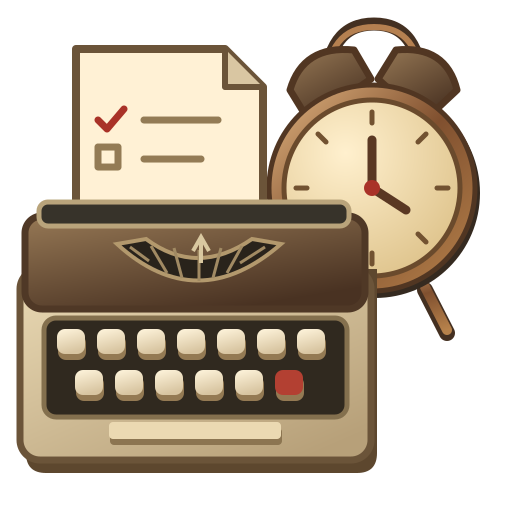

ROOM FOR FOCUS
One thing at a time.
Set a small intention. Give it your attention.
Brass & Tasks
A fresh page awaits
BRASS & TASKS ✦ ONE THING AT A TIME
Make space for what matters.

Brass & TasksTHE WEB EDITIONROOM FOR FOCUS
Set a small intention. Give it your attention.